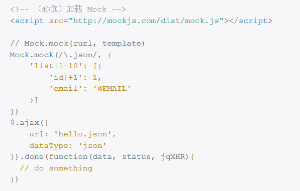

O2P能力开放平台
前端资源分享
Created by soon @ 2017-02-06一、插件篇
- bootstrap 3.3.2
视图框架 - artTemplate
由JS实现的新一代模板引擎，由腾讯前端团队出品，仅5K，支持node端预编译。 - Mockjs
可以拦截 Ajax 请求，生成随机数据(文本、数字、布尔值、日期、邮箱、链接、图片、颜色等。)，模拟返回的数据。还可以自定义延迟响应时间 - DataTables
表格插件，自带排序、过滤和分页等功能。 - echarts
一个纯 Javascript 的图表库，用于数据的可视化展示。
- uniform
对radio,checkbox元素的美化。 - select2
对select元素的扩展，支持搜索框。 - jquery-validate
表单校验 - bootstrap-datePicker
时间控件（年月日），支持时间跨度 - bootstrap-wizard
分步填写表单，流程控制 - slimScroll
模拟滚动条。 - Bootbox
模拟系统弹窗alert\confirm\prompt。
- bootstrap-modal
可以替换bootstrap自带的modal插件，支持了modal的垂直居中和多个modal的管理。 - toastr
右下角的消息提示框，用于展示用户操作时，后台的实时反馈信息。 - BlockUI
刷新或者异步加载时的过场遮罩。 - Jstree
树形节点列表 - bootstrap-hover-dropdown
扩展了bootstrap的dropdown.js，允许鼠标hover时激活下拉菜单。
插件演示
二、工具篇
- sublime text3
体积小，启动快，功能强大。必装插件：Emmet，SidebarEnhancements，DocBlockr，sublimerge，Bracket highlighter，HTML-CSS-JS Prettify，All Autocomplete - Rap
WEB接口管理工具。在前后端分离的开发模式下，它可以为前端提供Mock数据，协议管理（如版本回滚）。联调阶段，还能自动化比对接口协议。 - Git
分布式版本控制系统 - Node.js
前端工程化所依赖的开发环境，大量的构建工具是基于Node.js运行。如：yeoman、grunt、gulp、webpack等。
三、开发规范
文档结构
目录结构
js封装
var PageA = function(){
var function1 = function(){};
var function2 = function(){};
return {
init:function(){
},
method1:function(){
}
}
}()
CSS注释
//版本注释
/*
* @Author: soon
* @Date: 2017-01-18 16:53:33
* @Last Modified by: soon
* @Last Modified time: 2017-01-18 16:55:18
*/
//页面注释
/**********************************
* 登陆页面
*********************************/
//模块注释
/* --------- common css --------- */
//修改注释
/*( fix height )*/
JS注释
//版本注释
/*
* @Author: soon
* @Date: 2017-01-18 16:53:33
* @Last Modified by: soon
* @Last Modified time: 2017-01-18 16:55:18
*/
//方法注释
/**
* artTemplate的template()进一步封装
* @param {[type]} url [必填，请求json数据的地址]
* @param {[type]} tmplID [必填，模板的ID]
* @param {[type]} containerID [必填，容器ID]
* @param {Function} callback [选填，成功的回调函数]
* @param {[object]} data [选填，传参,{key:value}]
*/
四、开发模式
旧模式
部分用于展现的HTML是在后端生成的 静态页面（前端）=> 嵌套功能（后端）=> 页面错位 => 调试（前端）=> ...
存在的问题？
- 分工不明确
后端，嵌套功能时，需要与html/css打交道，甚至需要接触各种插件的api。
前端，调试时，也得深入后端环境，接触后端代码。
----------------
不能各自做擅长的事,且难免相互影响或者干扰对方的代码。
- 维护难
调试前，前端需要搭建复杂的本地环境
- 效率低
- 不能并行开发：前端输出静态页面前，后端只能等着。
- 有时1个角色可以完成的任务，变成2个角色必须跟着联动，比如UI改版。
为了解决以上的问题，需要有一种新的开发模式。
--- 前后端分离模式（解耦）明确分工
JSON是连接前端和后端的唯一纽带

探索
- 需要一款不依赖后端环境，且对前端友好的模板引擎
artTemplate是由JS实现的新一代模板引擎，由腾讯前端团队CDC出品，仅5K,不依赖jquery等任何外部框架，且支持node端的预编译。
官网 | 简洁语法 | 原生语法 | 模板分类（延伸知识）
用法
特点
用法

- 分离遇到的问题
接口文档
- 接口变更时，如何跟踪版本变化
- 编写mock规则时，如何形成接口文档（包含入参，请求类型和响应体等字段的说明）
集成
- 比如在最后需要集成的时候，我们才发现最开始商量好的数据结构发生了变化，而且这种变化往往是在所难免的，这样就会增加大量的集成时间。
RAP是一款可视化接口管理工具，由阿里前端团队出品。基于mock.js规则动态生成模拟数据，同时具备文档管理，版本跟踪，自动化校验和本地部署等特性。
- 组件化
以页面小部件(component)为单位将页面小部件的js、css、html代码片段放在一起进行开发、维护，组件单元是资源独立的，组件在系统内可复用。比如头部(header)、尾部(footer)、搜索框(searchbar)、导航(menu)、对话框(dialog)等。
至此，借助前端的模板和Mock技术，基本解除了对后端模板和数据的依赖。前端攻城狮可以独立于后端开始愉快的开发了 : )
五、实例演示
分享完毕
: )